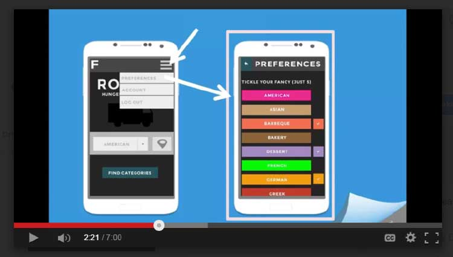
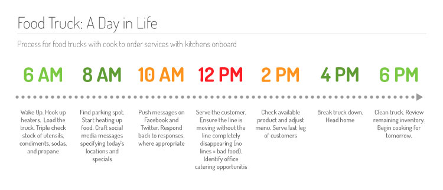
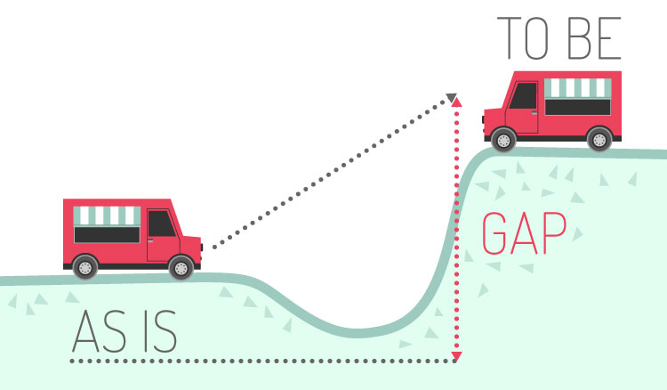

In the fall of 2013, Washington, DC passed legislation to limit food truck’s vending areas. Food trucks were restricted to zoned regions, which were selected by lottery draft permits. As a result, food truck owners could no longer roam popular neighborhoods and destinations to find new customers. Our team of aspired to circumvent the law by bring customers to food trucks
Our product ultimately failed. It didn’t align with food truck owners needs and was too ambitious. When building new products in the future, a couple key learns will be applied

Finding industry Subject Matter Experts (SMEs) FIRST is key to creating strong feedback loops. These individuals will help with drafting initial User Stories, as well as attracting other User Research candidates

Whenever removing steps within a process, question what friction removing these steps create. Maybe step 7 of 10 holds the entire process together

New products must strive to solve one problem with one solution for one ideal persona. Our product lacked focus, aspiring to satisfy food truck owners, operators, and patrons needs. The end result netted disappointing experiences for all
Food truck owners lamented the new legislation because it would negatively impact lunch time sales. The beta version focused on creating new revenue streams that aligned with existing operations
The exclusivity of the food truck community made it difficult to craft detailed user personas and understand their goals. After several guerilla research efforts, we gathered our learnings, drafted high-level User Stories and identified gaps between the current market and users' presumed needs. Upon completing, our team created a prototype demo video to distribute to food truck owners in DC, Maryland and Virginia
Although our click-through and response rates were dramatically low, we caught the attention of several food trucks owners and key players. We worked with food truck owners, operators, and consultants to map food trucks day to day operations and identify core segments. We quickly discovered the food truck industry was very fragmented, with significant variance in each group
While gathering feedback on food trucks' Customer Journey, we quickly realized something: our product wasn’t going to work. At the core, our application was a real time bidding system for ordering food truck meals. The experience required a reactive customer AND supplier environment. And unfortunately our supplier, food trucks, worked in a very proactive, planned flow. We were forced to pivot or die
